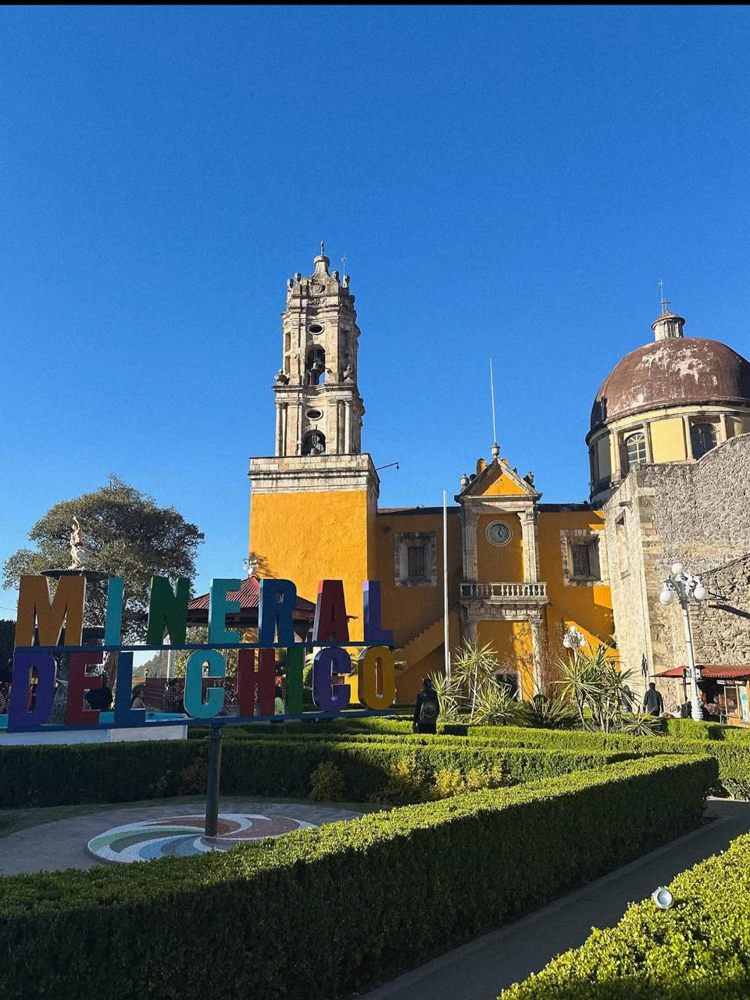

¿Qué es El Oro?

El Oro de Hidalgo, conocido simplemente como El Oro, es un pueblo mágico ubicado en la parte noroccidental del Estado de México. Su nombre se debe a la gran riqueza minera que tuvo en el pasado, especialmente por la extracción de oro y plata. Hoy en día es un destino turístico que combina arquitectura antigua, naturaleza exuberante y una clima fresco y agradable durante todo el año.